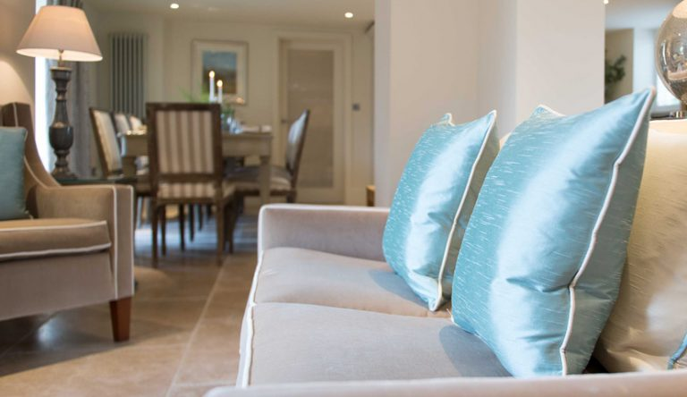

object-fit: cover; object-fit может иметь одно из 5 значений:
1. contain: Размер контента (например, изображения) будет изменен, чтобы отобразить его целиком с сохранением первоначального соотношения сторон,
но при этом уместиться в размеры, заданные элементом.
2. fill: Размер контента будет увеличен, чтобы заполнить размеры, заданные элементом,
даже если при этом будет нарушено первоначальное соотношение сторон.
3. cover: Сохранение соотношения сторон контента, но изменение его ширины и высоты.
Таким образом, контент полностью покрывает элемент. Меньшая из двух сторон изменяется до размеров контейнера, а большая – выходит за рамки элемента и обрезается.
4. none: Полностью игнорирует высоту или ширину, заданные контейнером,
и просто использует оригинальный размер контента замещаемого элемента.
5. scale-down: Размер контента задается либо как при указании none, либо как при contain,
смотря что из этого даст меньший размер замещаемого элемента в итоге.
object-position действует так же, как background-position при работе с фоновыми изображениями.